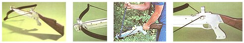

NOTE: Though we did build and test both of our crossbows, the potential for injury from any weapon is enough to compel us to say that whoever builds and uses this tool does so at his or her own risk.
An archer might consider it kin to a firearm ...a shooter, on the other hand, most likely would think it a stock-mounted bow ...and you wouldn't need a poll to know the general public's feeling: It looks sinister enough to be a lethal weapon!
In short, there's not much doubt that the modern crossbow suffers an "identity crisis," but-regardless of the mystery that still surrounds this curious hybrid-it's been gaining in popularity among hunters and targeteers alike ...and that trend hasn't gone unnoticed here at MOTHER.
With several avid bowhunters on the staff, and a research department eager to take on such an interesting challenge, it wasn't too difficult to get the ball rolling on a project that we figured might be a first in the field: designing and building a quality crossbow from scratch ...testing its range, accuracy, and overall effectiveness ...and then comparing its performance to that of traditional recurve and compound bows.
The contemporary crossbow shares little beyond a basic design with its forebear, the medieval arbalest. Though both launch arrows (bolts) by means of a short bow transversely fixed to a stock, the superiority of modern materials-along with the improved geometry made possible by the use of such lightweight plastics, alloys, and composites-has turned what was a crude but effective weapon of war into an admirable piece of fairly uncomplicated technology.
Over the past few years, crossbow design has received considerable attention from various manufacturers, with the result that the old standard has been modified to run the gamut from a paramilitary-looking assault piece to an artistic expression of classical physics. And although these developments represent improvement in most cases, they're beyond the ability of all but the best-equipped crafts people to duplicate.
We chose the path of least resistance and used the simplest common denominators in our design. The stock of our crossbow consists of a center spine covered on each side by a strengthening flank. As a bolted-together unit, this flat-aluminum assembly serves as a combination barrel (or chase in crossbow terminology), trigger housing, handgrip, and shoulder extension.
The bow, or prod, is set into the nose of the forestock, and the two-piece trigger mechanism, cut from 1/4" plate steel, is pinned between the right and left flank pieces just below the receiver. Walnut stock inserts were trimmed and shaped to mate with the stock on either side of the shoulder extension.
Since the string does contact the barrel and is thus subject to friction, we added a pair of shoulder slides to the sides of the chase to reduce string wear and increase bolt velocity. Though these could also be made of walnut, we used Delrin (a Du Pont acetal resin) because it possesses an inherent lubricity.
Our crossbow's open sights consist simply of a front frame made of aluminum strap, and an alloy rear ring mounted to the receiver. Socket-head cap screws threaded into each of these brackets provide sighting beads, and the rear unit can be lowered or raised as necessary to zero the piece in at a specific range.
As far as we've been able to determine, a telescopic rifle sight is inappropriate on a crossbow for three reasons. First, the weapon's effective range is limited to 50 yards or so in all but an expert's hands, and at that distance, beads and the practiced naked eye should be sufficient. Second, a fired bolt's trajectory is such that, beyond 15 or more yards, its drop is enough to lower the point of impact many inches from the line of sight (see sidebar) ...and since most scopes are calibrated for rifles, the range of adjustment may be restrictive or the zeroing-in process tedious. Finally, a scope narrows the field of view and adds weight as well.
You've probably already noticed that our photos show two different crossbows. The first, detailed in this article, is a functional, no-gadget rendition that's not overly complicated to assemble, which should serve as a fine fieldpiece or target piece. The second is a multiuse version that has some interesting features, but for the most part it's best suited to range shooting or backyard "plinking." It sports a folding front handgrip, a removable shoulder stock extension (which allows the long arm to convert to a hand piece), and-no doubt the most practical feature of all-a positive trigger safety. (This last item, by the way, can be added to our standard crossbow if desired.)
You might be interested to know that we spent about $102 making our fieldpiece; that breaks down to approximately $14 worth of 1/4" aluminum flat stock (available at a scrapyard or a metals distributor); $8 in Delrin; $6 for the walnut billets; about $7 in assorted bolts, pins, and other minor hardware; and-here's the kicker-$67 worth of prod and Dacron bowstring.
Admittedly, it would have been nice if we'd been able to construct our own short bow by using common materials ...and believe us, we tried! But the laminated fiberglass plods we laid up just didn't have adequate draw strength or the resiliency to stand up to repeated use, possibly because we weren't able to duplicate the heat-and-pressure curing process used by commercial manufacturers. Barnett Crossbows sells prods, strings, bolts, and other accessories.
To ease construction, we've outlined the crossbow's major parts and drilling point within a grid, which will allow you to make up-scaled templates for the metal pieces. But play it safe by matching the templates perfectly before taping them to the metal and scribing their outline ...and be even more careful when actually cutting the aluminum stock, since [1] the pieces must join closely or you'll be spending a lot of time with the file, and [2] the center spine's weak spot-the trigger guard-should not be any thinner than 7/32".
The best way to trim the parts accurately, by the way, is to use a band saw equipped with a metal-cutting blade. Because the smooth operation of the trigger and stringy catch depends in great measure upon the perfect alignment of the three stock component, we suggest that you postpone drilling the flank pieces until you've bored the 9/64" post holes according to the center points indicated on the template. Once those sockets are complete, clamp the aluminum center spine to one of the flanks and recheck the alignment, using the template cutout from the trigger housing. Then drill corresponding holes in the one flank piece
With that done, use No. 6 X 3/4" machine screws as temporary locating pins for the two bored components, and clamp the second flank piece in place. When you're satisfied that all three parts are evenly mated, drill the final member. Since the post screws are recessed, you'll need to countersink the exterior openings with larger bits according to the design of the screws and nuts you've chosen.
The steel trigger components have to be thinned by 1/64" in order to allow them freedom of movement within the stock. Once this is done, those parts can be drilled where indicated with a 1/8" bit, and the 1/8" X 3/4" expansion pin pivots can be pressed in and centered. The pivot pins ride in 9/64" sockets drilled into the right and left flank pieces; to be on the safe side, you might want to use the trigger-housing template cutout to position those openings accurately.
As we mentioned before, you can install a trigger safety mechanism according to our detail. Both the trigger and the safety catch are returned by small compression springs set into slots cut through the central spine.
Before assembling the stock for good, you'll want to bevel the inner surfaces of the barrel, and round the entire frame's outer edges. The rough work can be done with a grinder or file, and the metal then can be smoothed with emery cloth. Save the final extra-fine polishing for later, after you've bolted and pinned everything together and completed the cosmetic work.
The next portion of the project includes setting the bolt tang (the spring-steel leaf that holds the projectile snug against the barrel), adding the wooden (or Delrin) slides to the flanks, and cutting, shaping, and fastening the walnut inserts that dress the shoulder extension. (These pieces can be cut to shape using the template as a guide, then rounded with a sander and bolted or glued to the aluminum spine prior to being finished with varnish or tung oil.)
The front sight is a piece of 1/16" X 5/8" X 6-1/2" strap aluminum bent into an open frame configuration so the bolt can pass through it. It's fastened to the top of the forestock with two No. 6 X 1/4" machine screws, and a short cap screw locked through its crown serves as a bead. Though we used a machined ring at the rear (to provide a housing for an experimental scope sight), you can make an excellent sighting post by simply drilling and tapping a hole at the top of the receiver to accept a 632 socket-head cap screw about 1-1/2" in length. This can then be adjusted up or down for sighting.
We ordered a prod with a draw strength of 175 pounds ...but even if you choose a lighter bow to lengthen string life, you'll probably need a cocking lever to pull it into position. You can make one by bending four sections of 1/8" X 1" flat metal to create a two-armed, bolt-together yoke that uses mechanical advantage to ease cocking (see illustration). A pair of slots in the stationary part of the lever hook into a 5/16" X 3" steel rod fitted into the crossbow's forestock (this should be located as indicated on the template and pressed in place before you install the prod), and another set of slots cut into the short "jack arms" catch the string. The fulcrum's just a movable collar that can be locked into the optimal position.
The prod is held in place by a 1/4" X 1" X 1-1/4" block of aluminum faced with a strip of hard rubber. A similar pad, glued to the rear of the prod socket, provides additional cushioning, and the metal block is forced tightly against the bow's face by a 1/4" X 1-3/4" cap screw threaded into a tapped hole at the nose of the stock.
Once the prod's installed, you'll have the pleasure of stringing it. Unless you're extraordinarily muscular, we'd suggest you purchase what's called a bastard string along with the regular Dacron cable. This set of strands is longer than the service string and thus can be slipped onto the prod more easily. It's then used to draw the bow's ears back to the cocked position so the real string can be looped in place. When that's done, both strings can be released with the trigger and the bastard removed. This is the only situation in which the crossbow should be "dry fired," since that practice can split the prod.
It should be quite obvious that your finished project has a lethal potential and should be handled with the same caution that you'd give to any longbow or firearm. Don't load it until you're ready to fire it, and don't fire it without an adequate field behind your target to safely absorb any overshots. Too, if you're interested in exploring the crossbow's capabilities for hunting, check your state's game laws before you build ...it could save a lot of disappointment later. Meanwhile, you might want to look over the sidebar accompanying this article to see what kind of results you could expect from your modern day arbalest!
Related Articles:
The Crossbow: Fact and Fiction|
 1) Our fieldpiece looks and functions like many of the more expensive manufactured crossbows. 2) The front sight is a strap of aluminum fitted with a bead. The steel cocking rod gives the cocking lever (3) a forward mount when the string is being drawn. 4) This prototype has no trigger safety, but one can be added. |
The takedown version is either a pistol or a long arm. |
Crossbow design plans. |